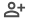

<div
class="Note3SymbolDiv"
>
<div >
   <!--  -->
   <mat-icon>notifications_none</mat-icon>
  </div>
  <div>
    <!--  -->
    <mat-icon fontSet="material-icons-outlined" >
   
      person
     </mat-icon>
   </div>
   <div>
    <!--  -->
    <mat-icon  mat-button [matMenuTriggerFor]="menu" fontSet="material-icons-outlined" >
   
      palette_outline
     </mat-icon>
   </div>
   <div>
    <!--  -->
    <mat-icon  mat-button  fontSet="material-icons-outlined">
   
      photo_library
     </mat-icon>
    
   </div>
   <div (click)="archiveNote()">
    <!--  -->
    <mat-icon  mat-button-outlined fontSet="material-icons-outlined">
   
     archive
     </mat-icon>
   </div>
   <div>
    <!--  -->
    
      <mat-icon   mat-button  (click)="setToggle()">
   
         more_vert
         </mat-icon>  
     
   </div>
</div>  
<div class="deleteDiv" *ngIf="toggle" (click)="deleteNote()" >
   <mat-icon>
      delete_outline
      </mat-icon>     
</div>
<mat-menu #menu="matMenu" style="width:21rem ;overflow: hidden" >
<div style="display: flex; width:21rem ;">
   <div *ngFor="let color of colors" >
   <button [style.background]="color.code" style="height: 1.5rem;width:1.5rem;borderRadius:50%; border: 1px solid #dad4d4;marginRight: 4px;" (click)="setColour(color.code)"></button>

   </div>
</div>
</mat-menu>

<!-- <mat-menu #menu="matMenu" >
   <button mat-menu-item>Item 1</button>
   <button mat-menu-item>Item 2</button>
 </mat-menu> -->